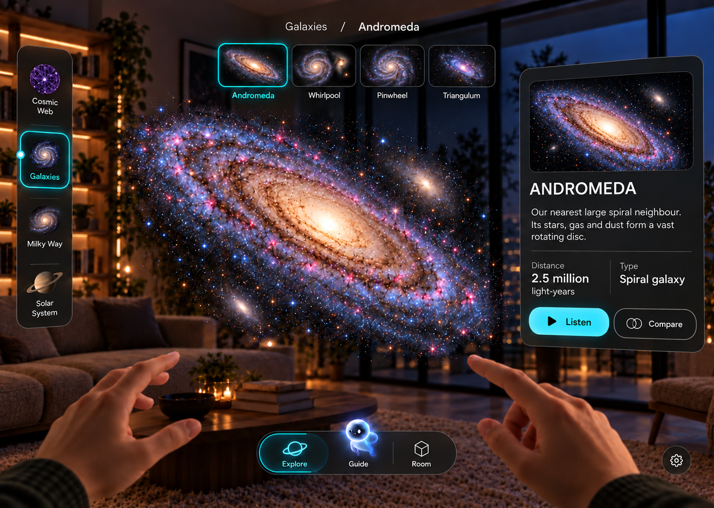
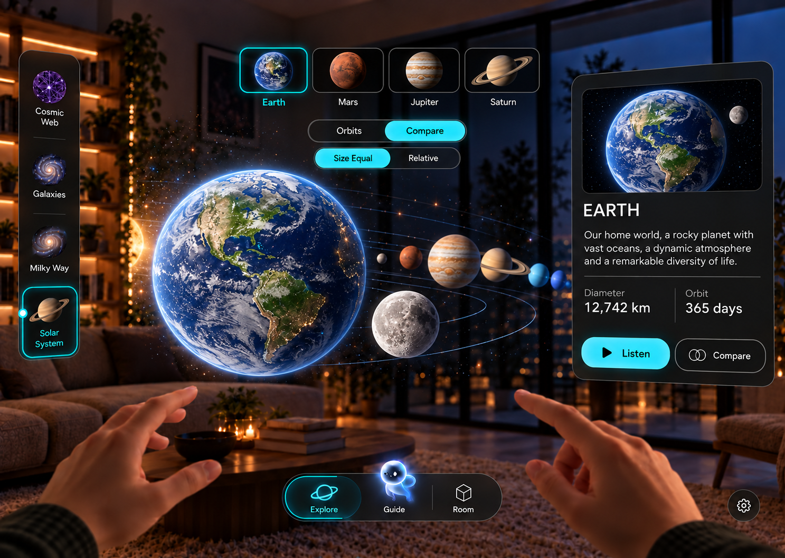
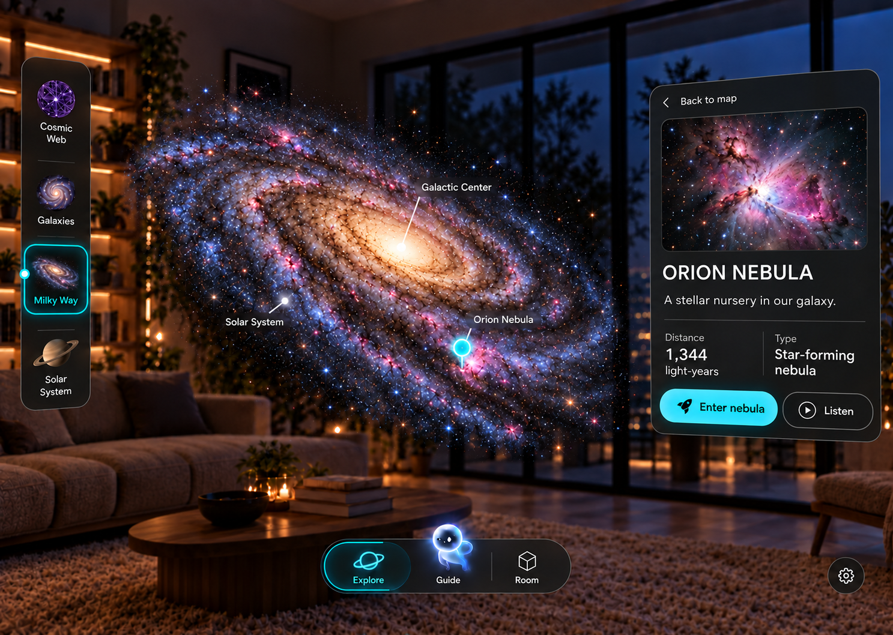
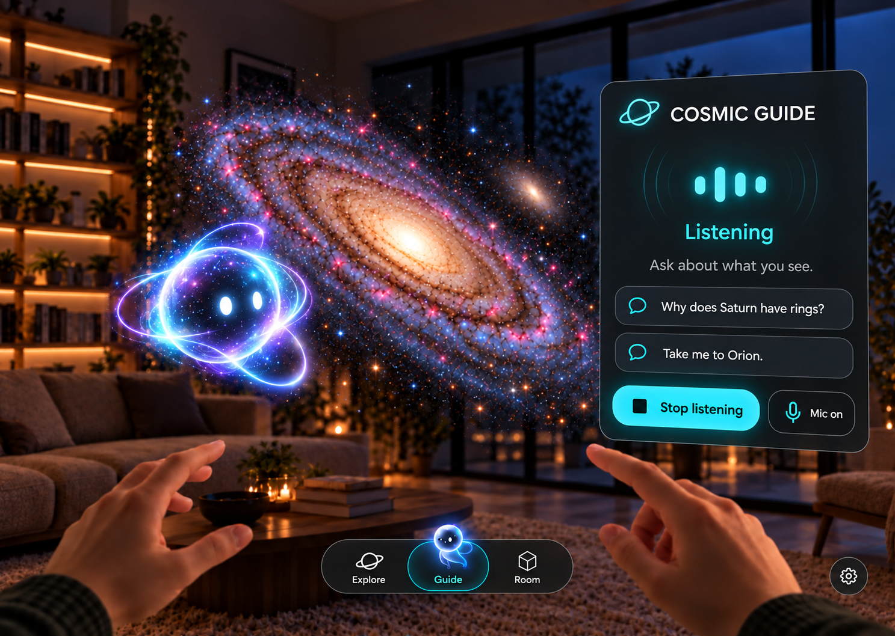
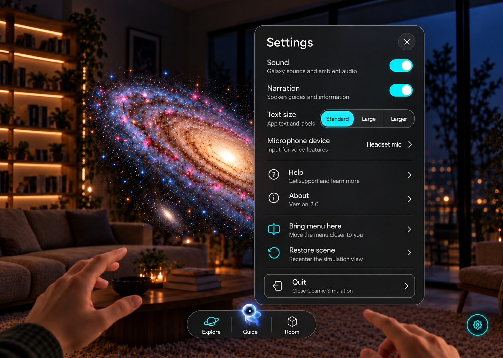
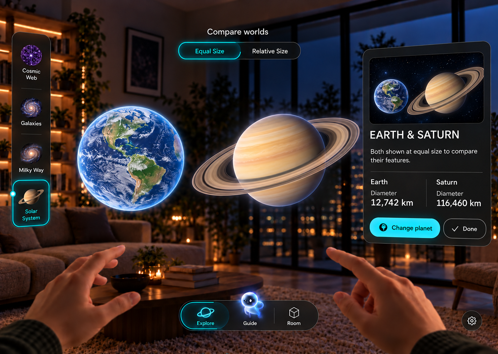
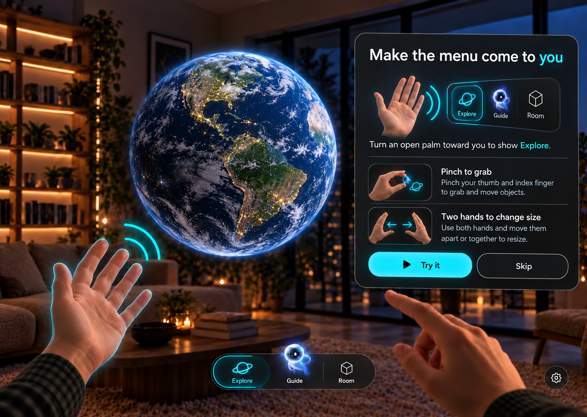
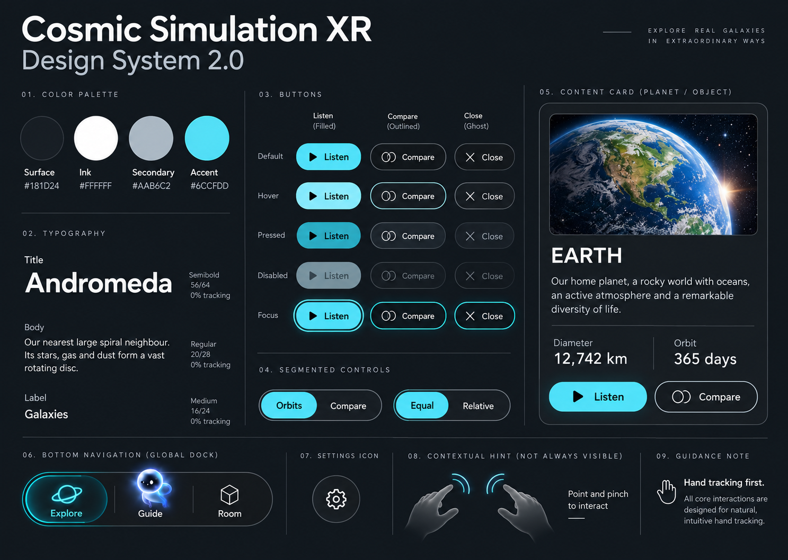

Cosmic Simulation XR — UI 2.0
Visual concepts and specifications. Figma transfer pending; these are raster references, not editable components.
Page plan and status
01 galaxies
02 solar system
03 destination preview
04 guide
05 settings
06 comparison
07 help
08 design system